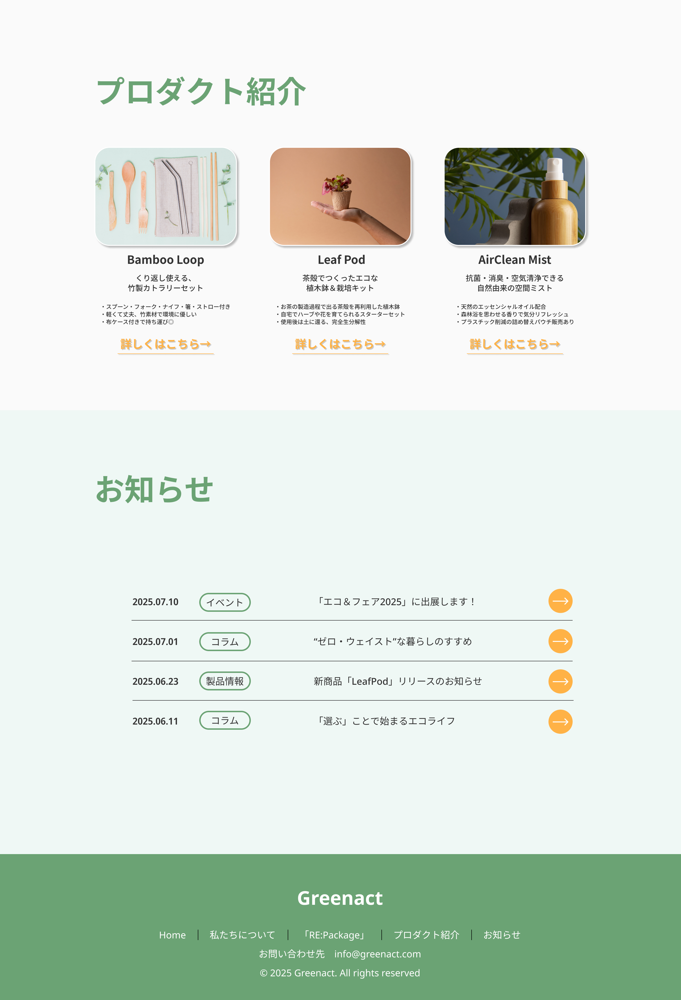
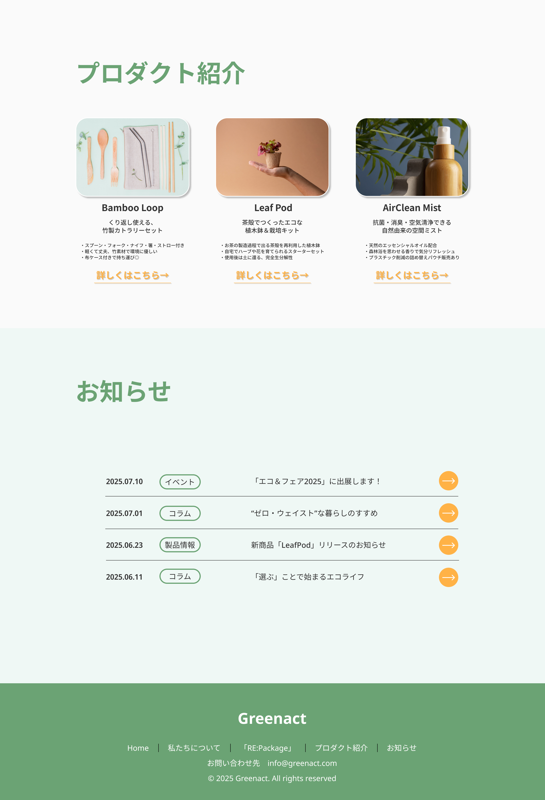

LANDING PAGE
 

概要
- 架空企業のコーポレートサイト(自主制作)
- LPデザイン(PC向け)
- 制作時間：3日(企画1日、デザイン制作2日)
- 制作ツール：Figma
ターゲット
企業や地方自治体のCSR/サステナブル推進担当者を主なターゲット設定。Greenactが展開する「RE:Package」シリーズの取り組みや理念を紹介し、共感・連携のきっかけ作りを目的とした、LPとして制作しました。
デザインの工夫
企業や自治体の担当者が「RE:Package」の情報に素早くアクセスできるよう、視認性と信頼感を重視したPC向けLPデザインを作成しました。 ファーストビューでは清潔感のあるグリーンとホワイトの背景に、丸みが印象的なイラストを使用し、配色とデザインで”環境へのやさしさ”を視覚的に表現しています。全体のレイアウトは縦スクロールに沿った自然な視線誘導を意識し、要点を絞った見出し・写真で、取り組み内容や商品が直感的に伝わる構成にしています。 また、企業などを相手とするため信頼感を重視し、情報を詰め込みすぎない落ち着いたデザインになるよう工夫しています。
実案件を想定した今後の展望
今回は架空案件のため素材が限られていましたが、実際の案件を担当する場合は実在するイベントや活動の写真・実績を積極的に掲載し、イベント参加者の声や、関係者のインタビューなどを紹介することで、より一層の信頼感や説得力を持たせたいと考えています。 また、より正確なターゲット設定や導線設計を行い、問い合わせフォームへの移動やイベント参加申し込みなど具体的なアクションにつながる構成にブラッシュアップしていきたいです。